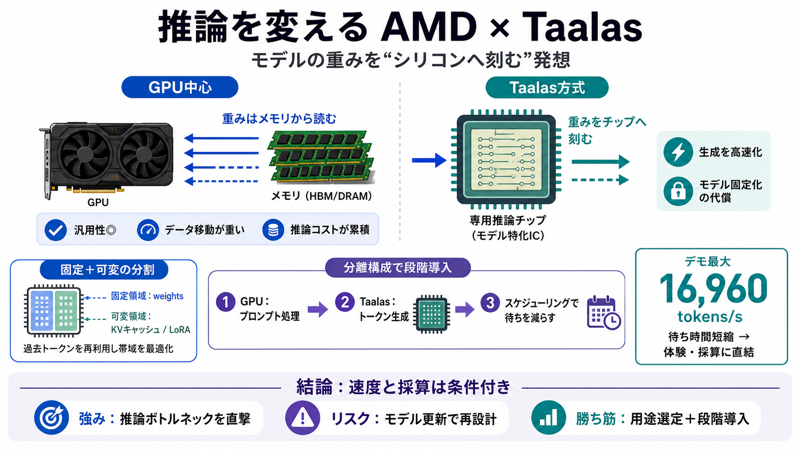

COVER
02 / 14
推論を変える
AMD × Taalas
モデルの重み（weights）をシリコンへ刻む
ことで、AI推論（inference / 推論）を桁違いに速くする狙いです。対応モデルは固定化されやすいというトレードオフもあります。
狙い
速度とコストの両立 / 推論中心
要点
GPUの外側に“モデル特化IC”
PROBLEM
03 / 14
ボトルネックは推論
なぜ今、推論か
学習（training / 学習）は一度の大コストですが、サービスで支配的なのは推論（inference / 推論）の反復です。だからトークン生成の遅さと計算コストが、そのまま体験と利益率に効きます。
GPUの役割
重みをメモリに置き、演算で回す
新アプローチ
重みの“置き場所”をチップ側へ寄せる
METAPHOR
04 / 14
地図ではなく刻印
場所を変える
GPUは“地図（重み）”をメモリから引いて計算します。Taalasは“刻印（重み）そのもの”をシリコンに焼き付け、参照経路の無駄を減らす発想に近いです。
GPU / 通常
重み＝HBM等に保持 → 書き換え前提
Taalas / 刻む
重み＝チップにエッチング → モデル固有に寄る
ARCHITECTURE
05 / 14
MSIC的な挙動
モデル特化の分割
記事の示唆では、Taalasは重みを固定する領域（マスクROM相当）と、動くデータを置く領域（SRAM相当）を分けます。推論では特にKVキャッシュ（後述）が効率の鍵になります。
固定領域（例）
モデルの重み（weights）をエッチング / 刻み込み
可変領域（例）
KVキャッシュ・LoRA等アダプタの格納
EVIDENCE
06 / 14
デモ数字
最大16,960 tokens/s
初期テストチップでは、最大
16,960 tokens/秒
のデモが示されたとされています。これは“データ移動や経路の無駄”を抑える方向性と整合します。
性能の狙い
トークン生成（生成ステップ）の高速化
意味
推論の待ち時間短縮 → サービス価値に直結
COMPARISON
07 / 14
“ライセンス戦略”の文脈
Nvidia式との差
記事は、NvidiaがGroqのような企業と進めた高性能推論サービスの“ライセンス戦略”と同系の文脈に置いています。つまり、競争軸を計算資源だけでなく“速く・安く提供する形”へ広げています。
GPU中心
汎用性が高いが、推論コストは累積
推論専用
速度/効率を“特定用途”へ最適化
Taalas方式
重みをチップへ刻み、推論経路を絞る
DISTINCTION
08 / 14
KVキャッシュが鍵
何が遅くなる？
推論では、過去トークンの情報を保持する
KVキャッシュ（Key-Value cache）
がボトルネックになりやすいです。そこで固定領域と可変領域の“配置”が重要になります。
KVキャッシュ
過去の表現を保持し、次トークン計算を再利用
効率化の方向
固定（重み）＋可変（KV）で経路/帯域を最適化
PROCESS
09 / 14
オフロード設計
GPU×Taalas分担
記事の示唆では、プロンプト処理をGPU側、トークン生成をTaalas側へオフロードする分担が考えられます。ディスアグリゲーテッド（分離）構成で段階導入しやすいのが狙いです。
i
プロンプト側：GPU（計算と整形 / Prompt processing）
ii
生成側：Taalas（モデル刻印に基づくトークン生成 / Token generation）
iii
全体：スケジューリングで“釣り合い”を取る（待ちを減らす）
RISK
10 / 14
固定化の代償
更新コスト問題
重みを焼き付ける方式は、モデルを変えるたびにチップの再設計（リスピン）が必要になり得ます。モデルが頻繁に更新される現実（毎月の流通）では、コスト増のリスクが残ります。
主なリスク
モデル変更 → 再設計/検証 → 運用負荷
緩和の可能性
金属層の変更で済む場合がある（記事の示唆）
EVIDENCE
11 / 14
LoRA/アダプタは柔軟？
どこまで差し替え可
LoRA（Low-Rank Adaptation / 軽量適応）のような更新は、SRAM領域にアダプタを置く設計なら影響が小さい可能性があります。とはいえ“完全に不要”とは断定できず、更新粒度の条件確認が必要です。
想定
軽量アダプタは可変領域へ（一定範囲で柔軟）
未確定
どの程度の変更まで“再スピン不要”か
CLOSING
12 / 14
結論：速度と採算は条件付き
導入の勝ち筋
この方式の強みは、計算資源を増やすだけでなく“重みの扱い方”自体を変えて推論ボトルネックを直撃する点です。一方で、モデル更新頻度・再設計コスト・混在環境のスループットが読めない限り、採算は条件付きになります。
戦略（Strategic / 戦略）
高付加価値推論サービスで差別化（SLA/体験）
運用（Operational / 運用）
ユースケース選定と段階導入が必須（失敗時の逃げ道）
REFERENCES
13 / 14
参照・検証ポイント
References
以下は、このトピック理解に必要な“確認すべき種類”です（記事本文に対応する一次情報を推奨）。
AMD × Taalas
：買収発表の公式リリース（条件、スケジュール、目的）
Taalas方式
：重みエッチング/固定領域・可変領域（KVキャッシュ/アダプタ格納）の技術説明
性能
：16,960 tokens/s の計測条件（バッチ、モデル、コンテキスト長）
運用
：モデル更新頻度に対する再設計コスト/期間、再スピン不要の更新粒度
統合
：ディスアグリゲーテッド（分離）構成での実効スループット（GPU側/生成側の釣り合い）
REFERENCES
14 / 14
References
No references found